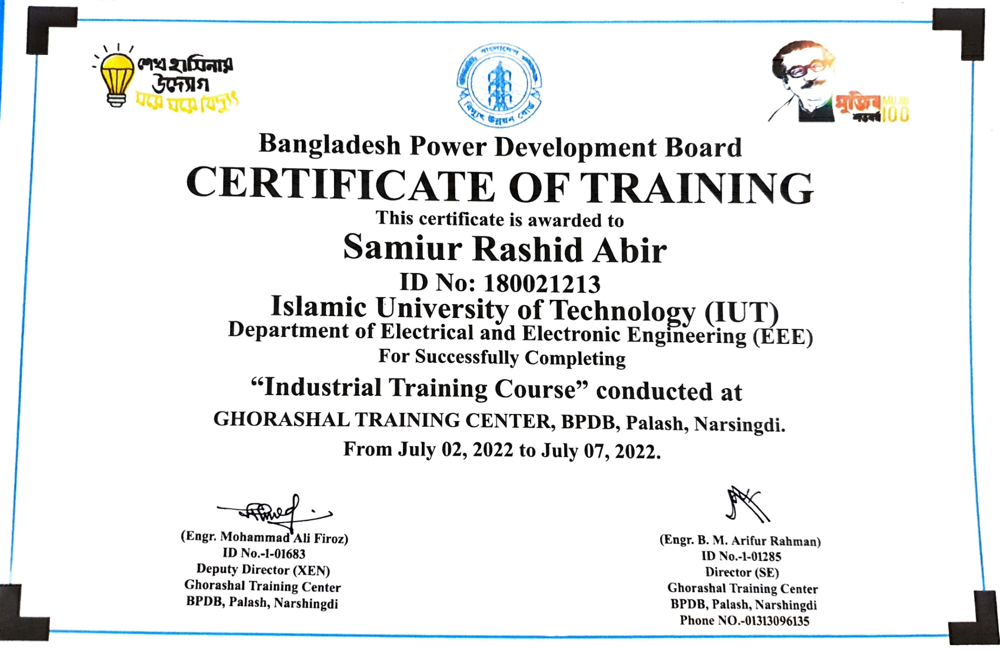
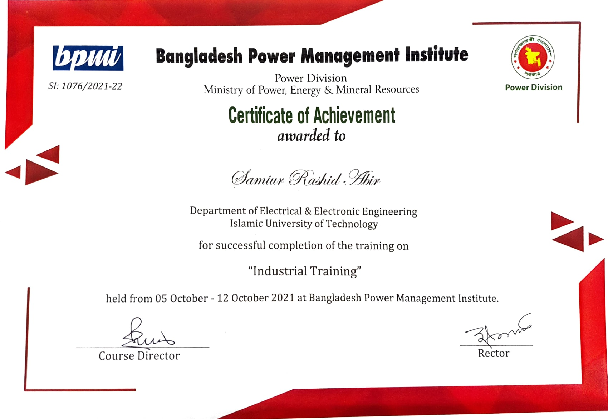

Machine learning assisted decision support system for prediction of prostrate cancer
Mahin Khan Mahadi,Samiur Rashid Abir, Al-Muzadded Moon, Muhammad Adnan, Mohd Abdun Nafee Islam Khan, Fahim Faisal, Mirza Muntasir Nishat, Md Taslim Reza
20th International Conference on Electrical Engineering/Electronics, Computer, Telecommunications and Information Technology (ECTI-CON), 2023
In this study, the performance of various supervised machine learning algorithms (SVC, LR, AdaBoost (Ada B), XG Boost (XGB), KNC, LGBM, GB, DT, and RF) is compared and discussed for the prediction of prostate cancer. We acquired data from Kaggle consisting of 100 cases and 10 characteristics.
Supervisor(s): Fahim Faisal, Mirza Muntasir Nishat
|
Attention-Based Models for Multivariate Time Series Forecasting: Multi-step Solar Irradiation Prediction
Sadman Sakib, Mahin Khan Mahadi, Samiur Rashid Abir, Al-Muzadded Moon, Ahmad Shafiullah, Sanjida Ali, Fahim Faisal, Mirza Muntasir Nishat
Heliyon
Attention-based models are widely used in the field of Natural Language Processing for their ability to learn long-term dependencies within sequential data. In this work, our aim was to present an attention-based model framework for multivariate time series forecasting. We used data from two different locations in Bangladesh with a resolution of 30 min.
Supervisor(s): Fahim Faisal, Mirza Muntasir Nishat
|
A Machine Learning Based Investigative Analysis for Predicting the Critical Temperature of Superconductors
Fatin Abrar Shams, Rashed Hasan Ratul, Ahanf Islam Naf, Syed Shaek Hossain Samir, Samiur Rashid Abir, Fahim Faisal, Mirza Muntasir Nishat, Sanjida Ali, Fahim Faisal, Md Ashraful Hoque
EAI Endorsed Transactions on AI and Robotics, 2023
Ever since the initial discovery of superconductivity, the fundamental concept and the complex relationship between critical temperature and superconductive materials have been subject to extensive investigation. However, identifying superconductors that exhibit such behavior at normal temperatures remains a significant challenge, and there are still significant gaps in our understanding of this unique phenomenon, particularly regarding the fundamental criteria used to estimate critical temperature. To address this knowledge gap, a plethora of machine learning techniques
have been developed to model critical temperatures, given the inherent difficulty in predicting them using traditional methods.
Supervisor(s): Md Ashraful Hoque, Fahim Faisal, Mirza Muntasir Nishat
|
ROC Based Performance Evaluation of Machine Learning Classifiers for Multiclass Imbalanced Intrusion Detection Dataset
Md Salman Mohosheu, Fatin Abrar Shams, Md Abdullah al Noman, Samiur Rashid Abir
IEEE 8th International Conference on Recent Advances and Innovations in Engineering (ICRAIE), 2023
Our work employs various supervised machine learning methods to classify malicious network traffic.
Furthermore, it has been determined that accuracy and False Acceptance Rate are not particularly informative metrics in this context because of the highly imbalanced nature of the dataset utilized in this research.
More appropriate metrics, such as the F1 score and ROC score, are recommended.
|
Asteroid Family Classification with Machine Learning: Investigative Analysis of a Novel Two-Step Approach for Identifying Small Asteroid Families
Fatin Abrar Shams, Maheen Mashrur Hoque, Abdullah Al Mahmud Nafiz, Md. Salman Mohosheu, Samiur Rashid Abir, Aftab Ibn Nazim, Rubaiat Rehman Khan, Md Mahmudunnobe, Md. Mushfiqur Rahman Mushfique, Mohsinul Kabir
Under Review
Supervisor(s): Mohsinul Kabir
|
An IoT-Integrated Interactive Smart Energy Monitoring System for Residential Energy Management
Mohammad Ashraful Haque, Maisha Farjana Etu, Samiur Rashid Abir, Quazi Nafees Ul Islam
Under Review
Supervisor(s): Quazi Nafees Ul Islam
|
Projects
These include the projects related with my undergraduate courses
|
Single Phase Smart Meter and Energy Monitoring System
The objective was to develop industry-based technological applications. To expand the knowledge acquired throughout the years of electrical engineering education.
Capstone Project
Supervisor(s): Quazi Nafees Ul Islam
|
Autism Spectrum Disorder Classification Using LDA, QDA and ANN
In this particular project, we investigated the scope of Autism by applying various machine-learning algorithms to a dataset containing autism cases.
Medical Electronics
|
Efficient Use of Renewable Energy Source in Electric Vehicle Using Bidirectional DC-DC Buck Boost Converter
It was mainly a project in the Electrical and Electronic Workshop course. In this particular course, the prospects and methodologies of the research were taught extensively.
Research methodologies
|
Snake and Ladder Game by means of Digital Logic Designing
Using knowledge of Proteus' Digital Logic Designing, the entire game was created. It greatly enhanced the fundamentals of Digital Logic Designing.
Digital Logic Designing
|
Automated Traffic Management System
Undergraduate C programming lab project. It was done to ensure a greater understanding of the basics of the C programming language and its various applications in different aspects.
C programming language
|
|
Industrial Tranining
|
Ghorashal Power Plant, Narsingdi
Ghorashal Power Plant is one of the significant generation centers of Bangladesh. It's capacity is around 1045 megawatts (MW) supplying in Palash, Narsingdi, Dhaka
Industrial Trainee

|
Bangladesh Power Management Institute
BPMI is the premier training institute in power sector. The main function of BPMI is to enhance the professional skills of engineers and officials working in the power sector in the public and private sectors.
Industrial Trainee

|
|
Participations and accolades
|
Duke Of Edinburgh Award
The Duke of Edinburgh's Award is a youth awards program that Prince Philip, Duke of Edinburgh, founded in the United Kingdom in 1956 and has since expanded to 144 nations. The awards recognize adolescents and young adults who have completed a series of self-improvement exercises based on Kurt Hahn's "Six Declines of Modern Youth" solutions.
Bronze Standard
|
Battle of Minds - 2022, 2023
The Battle of Minds is a global competition hosted by British American Tobacco that challenges university students to develop innovative solutions to real-world business challenges. Participants compete in regional and global rounds, with networking and career opportunities available to finalists. The competition highlights British American Tobacco's commitment to innovation and talent development.
Quarter Finalists
|
ISCEA PTAK PRIZE - 2022
This program is intended to provide the opportunity to demonstrate mastery of the body of knowledge concerning the fundamentals of supply chain management. The presentation of foundational topics, theories, decision aids, strategies, etc. will be plain and concise. Sourcing, the function of inventory in the supply chain, Material Requirements Planning, and Transportation are some of the specific topics covered. In addition to these specific supply chain topics, related issues such as Team dynamics, Sustainability, Lean, and instruments for continuous improvement will be discussed. A CSCA designation demonstrates one's expertise.
Winner of 70% scholarship
|